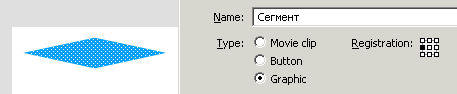

В этом уроке мы создадим реалистичную анимацию манипулятора без использования ActioScript.
Вначале нарисуем простой контур, чтобы сосредоточится на правильном положении сегментов будущего манипулятора. Конвертируем его в символ Графики, чтобы иметь возможность редактировать сразу все сегменты. Я выбрал регистрацию (Registration) центра символ с левого края, чтобы в будущем било легче находить положение оси поворота.
Шаг А. Сразу же оборачиваем выделеный объект в фрагмент ролика. Внутри него сможем создать анимацию, которая буде иметь независимую временную шкалу.
Шаг Б. Выберем инструмент “Свободное преобразование” и изменим положение центра трансформации на крайнее левое.

Шаг В. Теперь отредактируем эту часть манипулятора. На данный момент мы имеем такую структуру сцены: Сцена → Рука → Часть 1 → Сегмент.
Шаг Г. Скопируем в буфер обмена экземпляр графики и вставим на новом слое справа от оригинала.
Теперь нужно повторить шаги А — Г несколько раз.
Чтобы к концу манипулятор сужался, выделим сегмент и в окне Трансформация изменим масштаб на 80%. Если точка трансформации была виставлена в крайнее левое положение, то сегмент не придется двигать вбок. Эту процедуру необходимо проделать для всех сегментов (кроме последнего).
Теперь у нас есть окончательное положение и масштаб всех частей анимации и можно занятся оформлением робототехники. Редактируем на месте символ сегмента. Это позволяет видеть соседние элементы. При внесении изменений в символ, они распространяются на все экземпляры, поэтому видно картину в целом.
Например вот так.
Теперь, наконец, займемся анимированием отдельных частей манипулятора. Внутри каждого фрагмента ролика на слое с вложеным фрагментом ролика создаем анимацию движения. Добавляем ключевые кадры посередине и вконце. Тогда поворачиваем на среднем ключевом кадре наш объект на некоторый угол.
Если в каждом фрагменте ролика мы добавляли одинаковое число кадров, то в итоге получили бы манипулятор, который сворачивается в спираль и разворачивается. То есть все фрагменты ролика синхронно начинаются и заканчиваются. Но чобы анимация была максимально рассинхронизированой необходимо использовать число кадров анимации каждого сегмента равным простому числу. Тогда для них будет наибольним НОК (наименьшее общее кратное). Напрмер, для итоговой анимации я использовал 31, 29, 23, 19, 17, 13 кадров. Значит всего есть 86822723 уникальных кадров. Это означает, что анимация повторится через 33 с половиной дня (FPS = 30). Другие примеры использования простых чисел можно увидеть в статье "Принцип цикады"
Чтобы движение было более плавным, можно отредактировать профиль анимации. Нажимаем на неключевой кадр и в окне свойств настраиваем, каким образом будет происходить динамика.